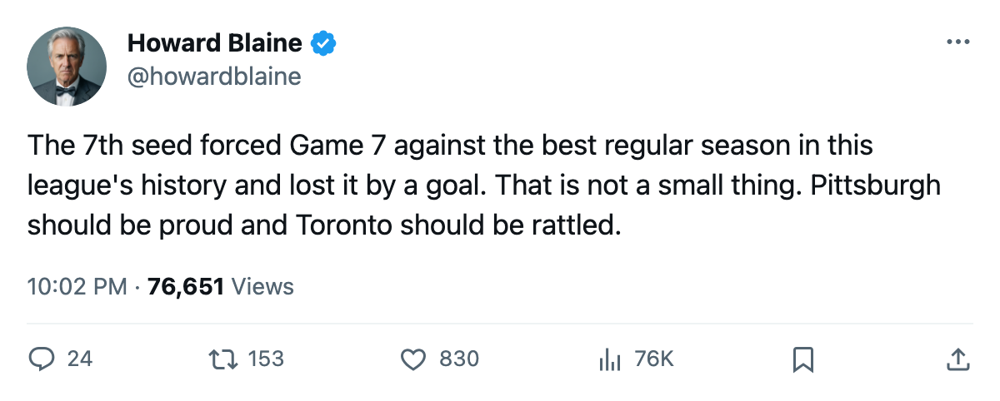
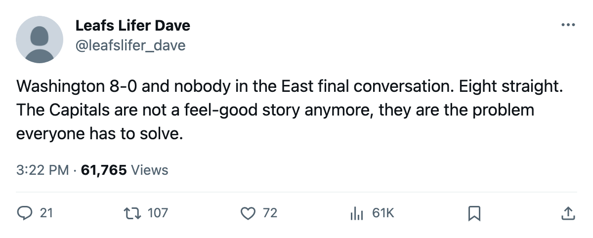

The Bracket, May 4: Toronto survives the 7th seed in 7, and the West runs Game 7 on two rinks
Washington is 8-0 through two rounds. Dallas and Anaheim each hold a 4-2 lead and a trip to the conference final on tonight's or tomorrow's game.
 Howard BlaineSenior writer, The Blaine Rankings · The Hockey Gazette
Howard BlaineSenior writer, The Blaine Rankings · The Hockey Gazette
Toronto won tonight 3-2 over Pittsburgh to take the Eastern Conference semifinal 4-3, and the  Toronto Maple Leafs Maple Leafs now wait for the winner of the West bracket. The
Toronto Maple Leafs Maple Leafs now wait for the winner of the West bracket. The  Pittsburgh Penguins Penguins came back from a 3-1 series deficit, stole Game 6 in overtime at home on Monday, and pushed the league's best regular-season club to a seventh game at the Air Canada Centre.
Pittsburgh Penguins Penguins came back from a 3-1 series deficit, stole Game 6 in overtime at home on Monday, and pushed the league's best regular-season club to a seventh game at the Air Canada Centre.  Mario Lemieux89 [572] has 11 points in 12 playoff games,
Mario Lemieux89 [572] has 11 points in 12 playoff games,  Johan Hedberg90 [380] has a 2.08 GAA across 6 wins.
Johan Hedberg90 [380] has a 2.08 GAA across 6 wins.
The East final is set: Toronto against Washington. The  Washington Capitals Capitals swept both rounds, 4-0 over
Washington Capitals Capitals swept both rounds, 4-0 over  Carolina Hurricanes in the first and 4-0 over
Carolina Hurricanes in the first and 4-0 over  Tampa Bay Lightning in the second, and carry an 8-0 record with a goal differential of 27 to 11.
Tampa Bay Lightning in the second, and carry an 8-0 record with a goal differential of 27 to 11.
The two Western Conference semifinals have a game each left before the conference final is set.  Dallas Stars leads
Dallas Stars leads  Phoenix Coyotes 4-2 and hosts Game 7 tonight.
Phoenix Coyotes 4-2 and hosts Game 7 tonight.  Mighty Ducks of Anaheim leads
Mighty Ducks of Anaheim leads  Edmonton Oilers 4-2 and visits Edmonton tomorrow.
Edmonton Oilers 4-2 and visits Edmonton tomorrow.
Round 1: the lower seed won half of them
Four of eight first-round series went to the lower seed. Pittsburgh (7) beat New Jersey (2). Arizona (8) beat Colorado (1). Anaheim (6) beat Nashville (3). Edmonton (5) beat Vancouver (4). The Phoenix-Collision series went seven games and decided on a fourth-goal in the seventh, the longest of the four and the one with the widest point gap: 112 against 93.
The four clubs eliminated in Round 1: Boston, New York Islanders, Carolina, New Jersey, Colorado, Detroit, Nashville, Vancouver.
| Seed | Club | Result | Round 1 score | Opponent seed |
|---|---|---|---|---|
| (1E) | Toronto Maple Leafs | Advanced | 4-1 over NYI | (8) |
| (2E) |  New Jersey Devils New Jersey Devils | Out | 2-4 to PIT | (7) |
| (3E) | Tampa Bay Lightning | Advanced, then swept | 4-2 over BOS | (6) |
| (4E) | Washington Capitals | Advanced | 4-0 over CAR | (5) |
| (1W) |  Colorado Avalanche Colorado Avalanche | Out | 3-4 to PHX | (8) |
| (2W) | Dallas Stars | Advanced | 4-0 over DET | (7) |
| (3W) |  Nashville Predators Nashville Predators | Out | 2-4 to ANA | (6) |
| (4W) |  Vancouver Canucks Vancouver Canucks | Out | 2-4 to EDM | (5) |
Round 2 East: Washington swept, Toronto needed seven
The Capitals' sweep of Tampa Bay was decided in overtime in Game 2, when they scored the winner to take a 2-0 lead and never trailed again.  Nikolai Khabibulin89 [478] had a 2.62 GAA in 67 regular-season games. He has been pulled twice this spring after allowing 14 goals in 4 games.
Nikolai Khabibulin89 [478] had a 2.62 GAA in 67 regular-season games. He has been pulled twice this spring after allowing 14 goals in 4 games.
Toronto led Pittsburgh 3-1 after four games, the last of those wins coming on the road with a 4-3 scoreline on April 28. Then Pittsburgh won 2-0 on April 30 and 3-2 in overtime on May 2 to force Game 7. The Penguins' playoff scoring belongs to Lemieux [572], who has 3 goals and 8 assists in 12 games, and to Eric Meloche79 [654], the Calder Trophy winner from last spring, who carries 5 goals and 3 assists in 12.
 Gary Roberts85 [841], the Conn Smythe winner from last spring's Cup run, leads the Maple Leafs with 11 points in 11 games.
Gary Roberts85 [841], the Conn Smythe winner from last spring's Cup run, leads the Maple Leafs with 11 points in 11 games.  Marian Gaborik99 [308] has 10 in 8, and
Marian Gaborik99 [308] has 10 in 8, and  Roberto Luongo97 [593] holds a 1.99 GAA with a .945 save percentage through 11 starts.
Roberto Luongo97 [593] holds a 1.99 GAA with a .945 save percentage through 11 starts.
Round 2 West: two 4-2 leads, two Game 7s
Dallas closed out Phoenix with a 4-1 win in Game 6 on the road Monday. The Stars scored 16 goals in the series against 11 allowed.  Mike Modano88 [669] has 13 points in 10 games and
Mike Modano88 [669] has 13 points in 10 games and  Jere Lehtinen86 [571] has 13 in 9.
Jere Lehtinen86 [571] has 13 in 9.  Marty Turco95 [1018] is 8-2 with a 1.56 GAA and a .909 save percentage, which is the lowest GAA among any goaltender with at least 5 playoff wins this spring.
Marty Turco95 [1018] is 8-2 with a 1.56 GAA and a .909 save percentage, which is the lowest GAA among any goaltender with at least 5 playoff wins this spring.
Phoenix arrived here after the upset of the spring: an 8th seed beating a 1st seed in seven games, the 93-point Avalanche eliminated by the 93-point Coyotes who earned their spot on regulation wins.  Mike Johnson83 [446] carries 12 points in 13 playoff games, the most on the roster.
Mike Johnson83 [446] carries 12 points in 13 playoff games, the most on the roster.  Sean Burke90 [128] is 5-6 with a 2.60 GAA across 11 starts.
Sean Burke90 [128] is 5-6 with a 2.60 GAA across 11 starts.
Anaheim took Games 5 and 6 of their series against Edmonton by identical margins: 3-2 on the road in Game 5, and 4-3 in overtime at home in Game 6.  Sergei Fedorov90 [276] leads all scorers in Round 2 with 13 points in 12 games, and
Sergei Fedorov90 [276] leads all scorers in Round 2 with 13 points in 12 games, and  Jean-Sebastien Giguere97 [317] has a 2.02 GAA and a .882 save percentage across 11 starts. Edmonton's
Jean-Sebastien Giguere97 [317] has a 2.02 GAA and a .882 save percentage across 11 starts. Edmonton's  Mike York84 [1100] has 20 points in 12 games, the most of any player in this postseason, and
Mike York84 [1100] has 20 points in 12 games, the most of any player in this postseason, and  Radek Dvorak75 [252] has 18.
Radek Dvorak75 [252] has 18.  Tommy Salo88 [870] is 6-5 with a 2.35 GAA and a .862 save percentage, numbers well below his regular-season marks of 2.90 and .859 across 71 starts.
Tommy Salo88 [870] is 6-5 with a 2.35 GAA and a .862 save percentage, numbers well below his regular-season marks of 2.90 and .859 across 71 starts.
The clubs still standing
Six clubs remain. Toronto and Washington are through; Dallas and Phoenix play tonight; Edmonton and Anaheim tomorrow. The Presidents' Trophy winner in Dallas has won 7 of 10, the reigning champion in Toronto 7 of 11. The 8-seed from Arizona has won 6 of 13 and has one game left to extend the longest single-club run by a low seed in this postseason.
Next
Tonight: Dallas hosts Phoenix, 4-2 in the series, 8th seed facing elimination on the road for the second round running. Tomorrow: Edmonton hosts Anaheim, 4-2 in the series, the 5 seed facing a 6 seed with a 20-point player who has not stopped producing.
The East final between Toronto and Washington has no date on the sheet.

